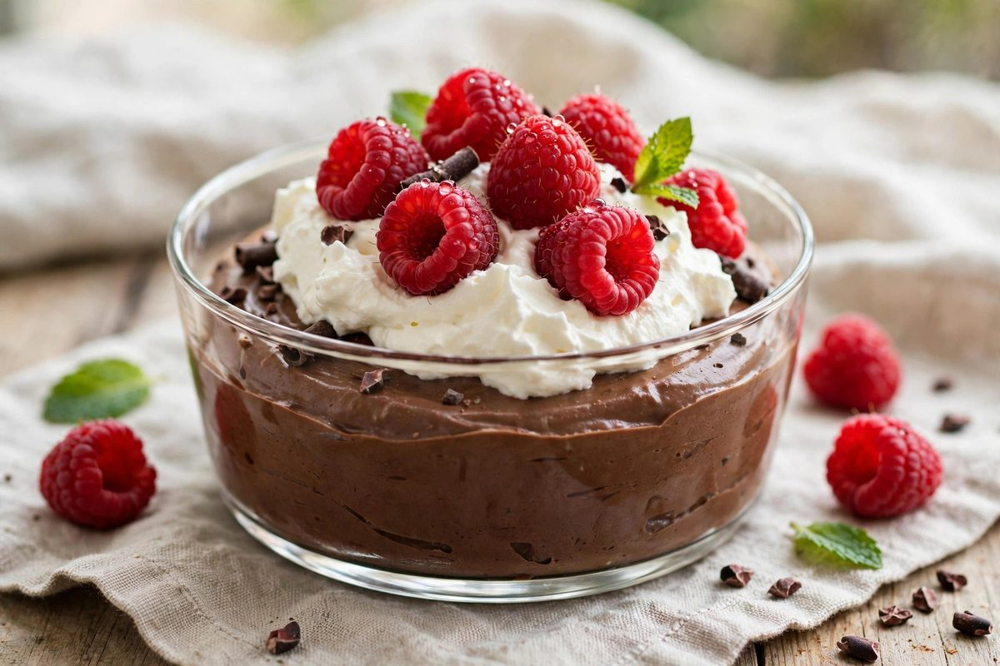

Home » Guides
Keto Desserts

A keto diet does not mean giving up dessert. With the right sweeteners and flour swaps, you can make chocolate mousse, cheesecake, brownies, and ice cream that fit comfortably within your carb limit. This guide covers the ingredients that make keto baking work, a few reliable recipes, and the portion habits that keep desserts a treat rather than a trap.
Sweeteners that work
Sugar is out, but several sweeteners have almost no effect on blood sugar. Erythritol, stevia, monk fruit, and allulose are the most popular keto choices, and they are often sold blended together to taste more like sugar. Erythritol measures roughly like sugar but can leave a cooling aftertaste, while stevia is much sweeter and needs careful measuring. Avoid maltitol and sorbitol, which are higher in carbs and can cause digestive upset. Start with small amounts; keto desserts taste sweeter than you expect once your palate adjusts to less sugar.
Flour and baking swaps
Wheat flour is far too high in carbs for keto, so bakers use almond flour and coconut flour instead. Almond flour gives a tender, cake-like crumb and works well for cookies, cakes, and brownies. Coconut flour is very absorbent, so you need much less of it and more eggs or liquid in the recipe. Eggs, cream cheese, butter, and cocoa powder are the backbone of most keto baking, and a little baking powder and vanilla extract go a long way. Because keto batters behave differently, follow tested recipes closely the first time rather than converting a wheat recipe by guesswork.
Easy keto desserts
Chocolate avocado mousse is one of the simplest keto desserts: blend ripe avocado with cocoa powder, cream, sweetener, and vanilla until smooth, then chill. A no-bake cheesecake uses a base of crushed nuts and butter with a filling of cream cheese, cream, and sweetener. Keto brownies made with almond flour, butter, eggs, and dark chocolate are rich enough that one small square satisfies. For ice cream, whip cream with sweetener and vanilla, fold in berries, and freeze, stirring once or twice to keep the texture smooth.
Keeping desserts in balance
Keto desserts are still calorie-dense, and it is easy to eat several servings without noticing. Treat them as an occasional pleasure rather than a daily habit, especially if weight loss is your goal. Keep portions small, serve dessert after a proper meal rather than on an empty stomach, and avoid keeping large batches in the house if you find them hard to resist. Baking a small batch and sharing the rest is a good strategy. Remember that the goal of keto desserts is to make the diet enjoyable and sustainable, not to recreate a high-sugar diet with different ingredients.
Storing and sharing keto desserts
Keto desserts keep well if you store them properly. Cakes and brownies last three to four days in an airtight container in the fridge, and they freeze well in individual portions for up to a month. Cheesecake keeps for five days in the fridge and freezes beautifully — slice it before freezing so you can defrost one piece at a time. Mousse and ice cream should be eaten within a few days, since their texture changes in the freezer. When you bake for others, do not announce that a dessert is keto until after they have tried it; most people cannot tell the difference, and the surprise is part of the fun. Sharing your baking is also a good way to show friends that keto food is normal, delicious food.
Frequently Asked Questions
What is the best sweetener for keto baking?
Erythritol and monk fruit blends are the most popular because they measure like sugar and bake well. Allulose browns nicely but is more expensive. Try small amounts to find what you like.
Can I eat dark chocolate on keto?
Yes. Dark chocolate with 85 percent cocoa or more has about 3 to 4 grams of net carbs per small square, so one or two squares fit easily into a keto day.
Why did my keto cake turn out dry?
Coconut flour absorbs a lot of moisture, so using too much of it is the usual cause. Follow tested recipes, measure carefully, and add an extra egg or a spoonful of cream if a batter looks too thick.